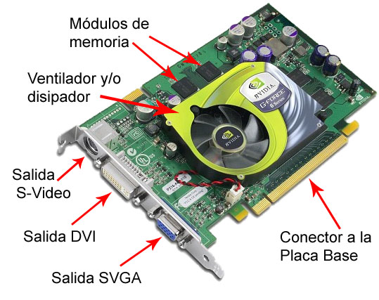

TG
Autor: Carlos Enrique Calvo Gomez

Definicion:
Una tarjeta gráfica procesa y muestra gráficos en una computadora, mejorando el rendimiento visual.
Autor: Carlos Enrique Calvo Gomez
Definicion:
Una tarjeta gráfica procesa y muestra gráficos en una computadora, mejorando el rendimiento visual.